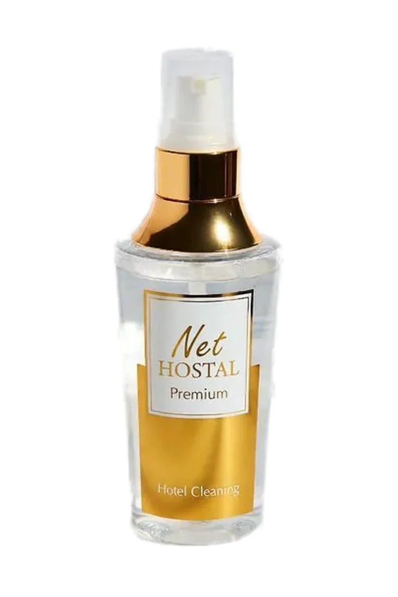

Net HOSTAL Premium
11,20 € / garrafa 5 L
Limpiador multisuperficie de aroma neutro, pensado para la rotación diaria de habitaciones y zonas comunes en hostelería. No deja residuos visibles ni velos en muebles ni espejos, y su alta tolerancia al agua calcárea lo hace fiable en cualquier zona geográfica. Certificado ISO 14001, combina rendimiento y respeto ambiental sin penalizar el tiempo de limpieza del personal.
Ver en la tienda HIGIENEX